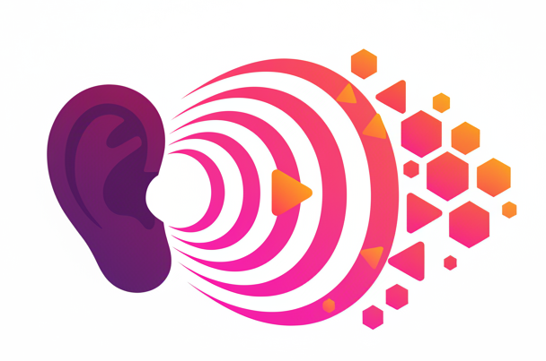

This site is designed as a remix of
Auditory Demonstrations
(1987) by Houtsma, Rossing, and Wagemakers. Demos were initially coded with Gemini 3 Flash then edited and verified by the human
Ian Stevenson
.
